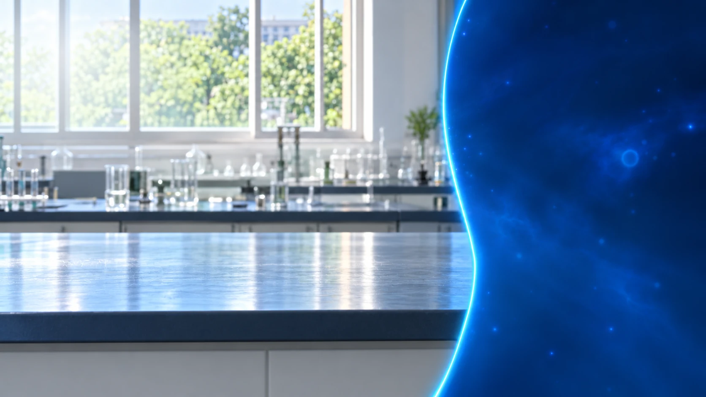

初中化学 / 实验探究
高锰酸钾
制取氧气
加热分解 · 排水集气
空试管 · 尚未装药
先检查气密性
集气瓶装满水 · 暂不收集
检查气密性
导管口浸入水中，再用手握住空试管。
OBSERVE · UNDERSTAND · REMEMBER
先确认：装置不漏气
手握升温 → 冒泡；松手冷却 → 水柱
实验知识
先检查气密性，再加入药品
| 操作 | 观察现象与依据 |
|---|
固体产物留在试管内，O₂ 逸出
KMnO颜色仅用于区分元素
不表示真实晶体结构或具体反应机理
化学方程式
2KMnO4加热＝K2MnO4 + MnO2 + O2↑
!先移导管，再熄灭酒精灯
准备观察
检查装药加热集气检验
正在准备实验装置…